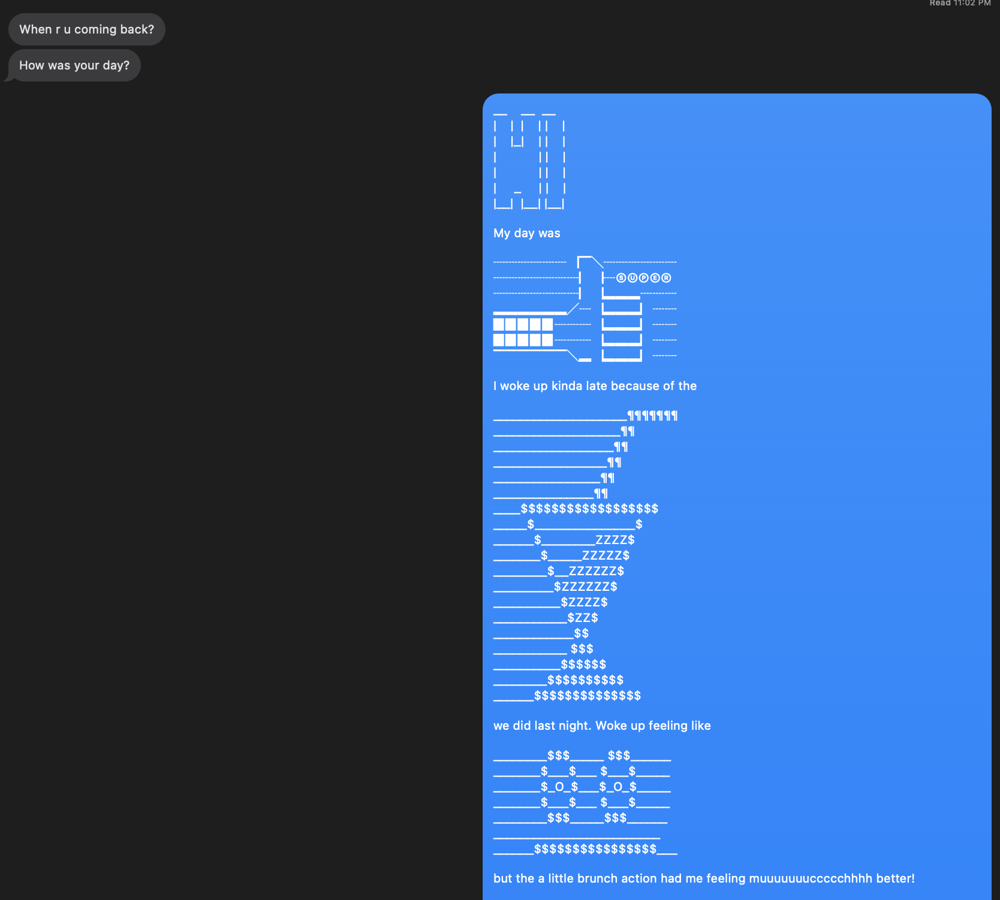
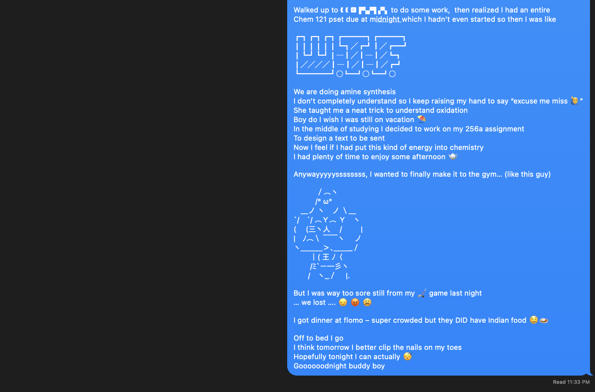

This is a response to Chapter 1 of Artful Design, "Design is ____".
I will be responding to Principle 1.13, "Design is Human"
“Design is Human” (pg. 46). I thought it fitting to start with this
definition of design which is presented to us in Chapter 1, especially
as it conflicts with what I once thought of as design, and what I still
think of as design. Firstly, I would like to treat design as an entity
entirely separate from the intentions and forces of humanity. I believe
there are traits we share with design, and traits we don’t. However, I
believe that our definition of design is solely based on the traits we
see common to ourselves, juxtaposed to anything we “design”. For
example, the epitome of human beauty has long been considered a product
of symmetry; the more symmetrical one’s face and body, the more
objective beauty they have. The same can be said about design, both
natural and artificial. Flowers, ferns, and honeycombs all exemplify
natural symmetry. The same can be said about pyramids, ancient
buildings, and bridges. From this we may assume that humans aren’t the
only architects of design. Rather, “Design is created. Design is
experienced. Design is a thing in motion” (pg 51). I believe that just
as we design buildings, paint art, play music, program software; design
has its turn in shaping humanity. We should design to experience the
emotions and aesthetics in design, but we can’t be so foolish as to
believe that design isn’t observing us as well, as stated in Chapter 1
of Artful Design. When I was younger I remember watching the “Night in
the Museum” with my family and still to this day questioning if the
world around us is in fact as it appears to us, or if its true form is
outside the dimensions of human perception, or if in fact we as humans
are the subjects of other entities looking in on us.
We devise a function to progress “as a society”. Over time, the jobs of
painters, musicians, architects, poets, and philosophers has been to
create a form for that function which enhances its usefulness. Form and
function operate in an infinite feedback loop, but only once we are
satisfied with both may we begin the cycle over again, devising a new
function to progress “as a society” further. Like Maslow’s hierarchy of
needs, one can’t simply create endlessly without taking the (sometimes
monotonous) time to sculpt and evolve the form into function; like a
Renaissance sculptor chipping out what is not to leave what is supposed
to be.
Reading and reflecting on this chapter gave me assurance that there is
not only a desire for design to “artify” our surroundings and make what
we do everyday more enjoyable, but also a need for that function to be
well designed: we need to FEEL it, become INSPIRED by it, become CURIOUS
because of it.
My Violin:
I believe that my violin is the epitome of the dichotomy between
means-to-an-end and end-in-itself. Without form, there would be no
function beyond kindling for fire on a desperate, cold, Vermont winter
night. However, without function, the form would be incomprehensible.
The balance between form and function and function and form is the
signature of the luthier, and foundation of my relationship with the
instrument. Interestingly, however, one needs not understand both to
experience both. If one were to close their eyes, the function they hear
would well inform the expected form. If I were to see the violin on
display, I would have an expectation of the function I would hear from
the instrument.
My weightlifting shoes:
There are those who believe that shoes merely serve the purpose of
covering our feet, and there are those who buy shoes, put them in glass
cases, never to be worn. I don’t fall into either camp. My weightlifting
shoes are built with purpose – I bought them for the very purpose they
were created for. However, over time, I have come to realize an
emotional connection to every scuff mark, imperfection, and horrid smell
connected to the pair. They are not the shoes I bought – they are my
shoes. Their beauty to me, built over hours in the gym, far surpasses
any superficial desire to mend or replace them – at least not until
absolutely necessary.
My room:
My room falls under the category of “controlled mess”. My room doesn’t
take on one, two, or three functions. There aren’t enough words to
describe what functions my room offers me. It is a creative studio when
I feel claustrophobic. It is an escape when I feel overwhelmed. It is
nothing when I have too much. It is safe when I feel I have nothing. My
room is my ongoing experiment into Artful Design. I alter my room to
take on various forms and functions to fit my needs and desires, both
present and future. My room has four walls which everyone can see, but
only I know of the deep crevasses which truly give my room its power and
character.
For the final part of Design Etude #1, I present a text message to my roommate which has been "artified". Instead of summarizing my day (or just sending an audio message if I'm feeling EXTRA lazy), I decided to add another dimension: DESIGN.
 